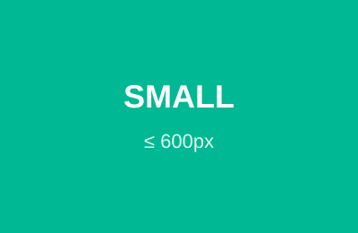

1 JavaScript là gì? Cơ bản
Ngôn ngữ lập trình thông dịch, chạy ngay trong trình duyệt, tạo nên phần "hành vi/tương tác" của trang web.
- Xuất hiện lần đầu trên trình duyệt Netscape 2.0 năm 1995 (tên ban đầu LiveScript).
- Thông dịch (interpreted): trình duyệt đọc và chạy từng dòng, không cần biên dịch trước.
- Có khả năng hướng đối tượng (object, prototype, class ES6).
- Ngày nay chạy cả phía client lẫn phía server — nhờ nền tảng Node.js.
JavaScript ≠ Java. Hai ngôn ngữ hoàn toàn khác nhau; cái tên chỉ là "ăn theo" để quảng bá thời 1995. Chuẩn chính thức của JavaScript tên là ECMAScript (ES6/ES2015 là mốc hiện đại quan trọng nhất).
2 JS làm được gì? Cơ bản
Bốn khả năng kinh điển của JavaScript phía client — bấm từng nút để xem trang tự thay đổi mà không cần tải lại.
JavaScript chưa chạm vào đoạn văn này.

4 · Kiểm tra (validate) dữ liệu nhập:
JavaScript phía client có thể: (1) thay đổi nội dung trang,
(2) thay đổi thuộc tính các thẻ HTML (ví dụ src của ảnh),
(3) thay đổi CSS, và (4) kiểm tra hợp lệ
dữ liệu người dùng nhập trước khi gửi đi. Cả 4 demo trên chỉ dùng vài dòng JS — xem
mã ở cuối file này.
3 Ba tầng của trang web Cơ bản
Nguyên tắc xuyên suốt môn học: tách bạch cấu trúc – trình bày – hành vi.
| Tầng | Ngôn ngữ | Trả lời câu hỏi | Ví dụ |
|---|---|---|---|
| 1 · Cấu trúc | HTML | Trang có gì? | <button>Gửi</button> |
| 2 · Trình bày | CSS | Trông như thế nào? | button { color: red } |
| 3 · Hành vi | JavaScript | Phản ứng ra sao khi tương tác? | btn.addEventListener("click", …) |
Hệ quả thực hành: tách JS ra khỏi HTML (như đã tách CSS ở Chương 2)
→ dễ bảo trì, tái sử dụng; và tránh viết onclick="" inline
trong HTML — bài 3.7 sẽ học cách thay bằng addEventListener.
4 Cách nhúng JavaScript Cơ bản
Hai cách: viết trực tiếp trong thẻ <script>, hoặc tách ra
file .js riêng rồi nạp vào.
a) Viết trực tiếp (internal)
<!-- đặt bất kỳ đâu trong tài liệu HTML -->
<script>
let loiChao = "Xin chào JavaScript!";
console.log(loiChao);
</script>b) Tách file riêng (external) — cách thường dùng
<!-- script.js là file .js riêng, nạp bằng thuộc tính src -->
<script src="script.js"></script>Vì sao nên tách file? (1) HTML và JS rạch ròi → dễ đọc, dễ bảo trì;
(2) file .js được trình duyệt cache → các trang sau nạp
nhanh hơn; (3) nhiều trang dùng chung một file JS.
Thẻ <script src="..."> không được viết thêm mã bên
trong — đã dùng src thì phần thân thẻ bị bỏ qua. Cần cả hai → dùng hai thẻ
<script> riêng.
5 Vị trí script · defer / async Nâng cao
Script chạy ngay khi trình duyệt gặp nó. Đặt sai chỗ → JS chạy khi
phần tử HTML chưa tồn tại → lỗi kinh điển null.
<!-- ① SAI (dễ lỗi): script ở <head>, chạy khi <p id="kq"> chưa được tạo -->
<head>
<script>
document.getElementById("kq").textContent = "Hello";
// ✗ Uncaught TypeError: Cannot set properties of null
</script>
</head>
<!-- ② ĐÚNG cách 1: đặt script ở CUỐI <body> (file này làm vậy) -->
...toàn bộ HTML...
<script src="script.js"></script>
</body>
<!-- ③ ĐÚNG cách 2: script ở <head> nhưng có defer -->
<script src="script.js" defer></script>| Cách | Tải file | Thực thi | Giữ thứ tự? |
|---|---|---|---|
<script src> (thường) | Dừng phân tích HTML để tải | Ngay khi tải xong | Có |
defer | Song song với HTML | Sau khi HTML phân tích xong | Có |
async | Song song với HTML | Ngay khi tải xong (có thể ngắt HTML) | Không |
Chuẩn hiện nay: đặt <script> ở cuối
<body> hoặc dùng defer
— cả hai đều bảo đảm DOM sẵn sàng trước khi JS chạy. async chỉ hợp với
script độc lập (thống kê, quảng cáo) không đụng tới DOM.
6 Chương trình đầu tiên Cơ bản
Truyền thống "Hello World" — và làm quen với DevTools Console (phím F12 → tab Console).
<!DOCTYPE html>
<html lang="vi">
<head><meta charset="UTF-8"><title>Hello JS</title></head>
<body>
<h1 id="chao">...</h1>
<script>
// 1. ghi ra Console (F12) — công cụ debug số 1
console.log("Hello World từ Console!");
// 2. ghi thẳng vào trang qua DOM
document.getElementById("chao").textContent = "Hello World!";
</script>
</body>
</html>7 Cú pháp cơ bản Cơ bản
Vài quy tắc nền trước khi vào bài 3.2.
| Quy tắc | Ví dụ / ghi chú |
|---|---|
Mỗi câu lệnh kết thúc bằng ; | let x = 5; — JS có thể tự thêm ; nhưng đừng ỷ lại (dễ lỗi khó lường) |
| Phân biệt HOA/thường | hoTen ≠ hoten; getElementById viết sai một chữ hoa là lỗi |
| Chú thích 1 dòng | // giải thích ngắn |
| Chú thích nhiều dòng | /* đoạn giải thích dài */ |
| Khối lệnh | đặt trong cặp { } — dùng với if, for, hàm… |
| Quy ước đặt tên | camelCase: firstName, totalPrice |
8 Strict mode Nâng cao
Một dòng khai báo bật chế độ "nghiêm khắc": JS báo lỗi sớm thay vì im lặng cho qua.
'use strict'; // đặt ở dòng ĐẦU file .js (hoặc đầu hàm)
num = 5; // ✗ ReferenceError: num is not defined
// (không strict: lặng lẽ tạo BIẾN TOÀN CỤC — nguồn lỗi khó lường)
let soLuong = 5; // ✓ khai báo tử tế bằng let/constQuy ước nghề: luôn bật 'use strict' trong file
.js (mã trong module ES6 mặc định đã strict). Nó chặn được
lỗi "gán biến chưa khai báo", cấm with, và nhiều bẫy khác.
9 Mẹo & lỗi thường gặp Tổng kết
Lỗi 1. Cannot read properties of null
— script chạy trước khi phần tử tồn tại. Sửa: chuyển script xuống cuối body
hoặc thêm defer.
Lỗi 2. Viết sai hoa/thường:
getElementByID (sai) vs getElementById (đúng). JS phân biệt
hoa thường tuyệt đối.
Mẹo 1. Mở F12 → Console là việc đầu tiên khi trang "không chạy": mọi lỗi JS đều hiện ở đó kèm số dòng.
Ghi nhớ. HTML = có gì · CSS = trông thế nào ·
JS = phản ứng ra sao. Tách 3 tầng, script cuối body hoặc defer,
luôn 'use strict'.